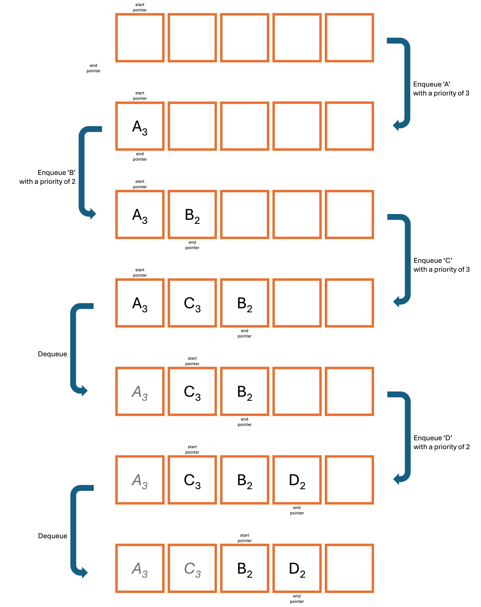

GCSE Link: None
 A priority queue is a static abstract data type which stores a sequence of items.
A priority queue is a static abstract data type which stores a sequence of items.
However, priority queues also store the priority of each item: higher priority items are dequeued first. If multiple items have the same priority, the queue goes back to FIFO (first in first out).
Diagram 1 shows some operations being carried out on a priority queue.
 Diagram 1
Diagram 1

 What is the time complexity of a priority queue's enqueue and dequeue operations?
What is the time complexity of a priority queue's enqueue and dequeue operations?
There are two options, depending on when the data is sorted by priority.
If data is sorted when enqueued (as shown in Diagram 1), the enqueue operation is O(n)
and the dequeue operation is O(1).
But if instead the program figures out which item is the highest priority when dequeueing, the
enqueue operation is O(1) and the dequeue operation is O(n). However,
doing this can be a bit harder to implement as it may leave empty spaces in the queue.